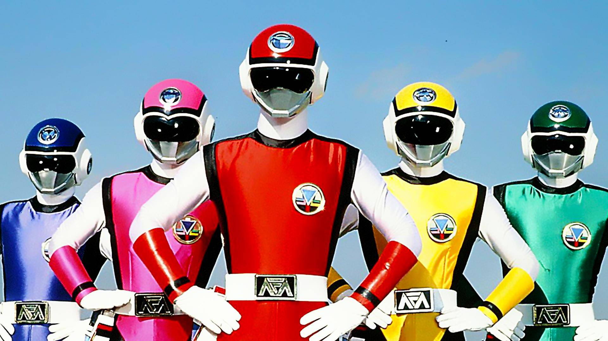
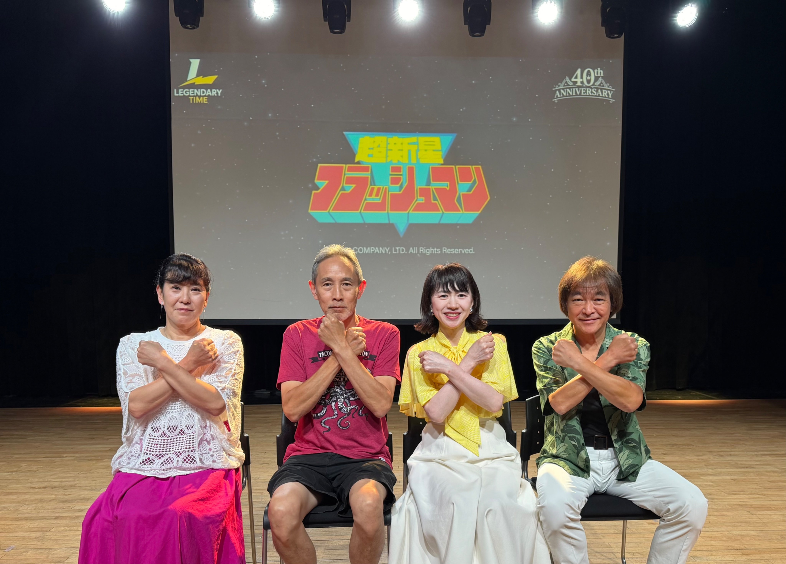
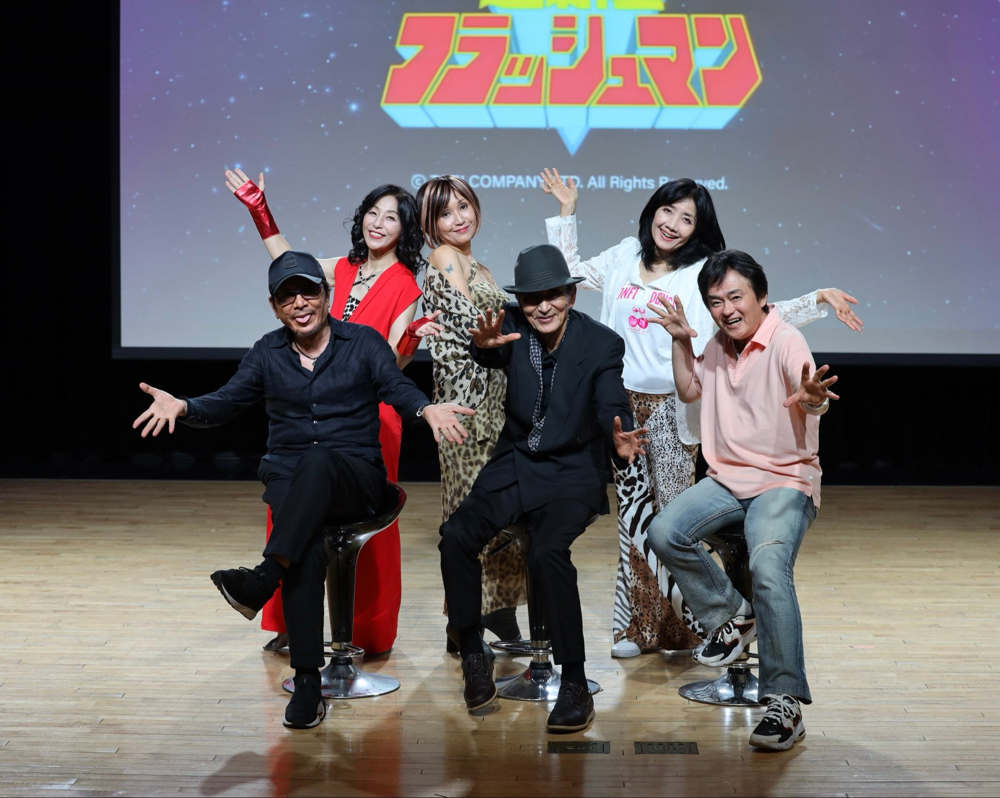

1986년도작품 지구방위대 후뢰시맨 팬미팅을 일본도 아니고 한국에서 했음
일본에서는 후뢰시맨 행사 같은거 없었다고함

40주년 작품이라 등장인물들이 다들 연세가...
7월 11일 5명 전부 모이기로 했는데 한분이 사정상 빠졌다고 함
그래도 한국에서 행사 열린게 어디냐

9월 5일 후뢰시맨 팬미팅이 열렸는데 이번에는 악역들만 모아서 팬미팅함
전대물 악역만 모여서 행사가 열린건 세계 최초라고함 (심지어 40주년...)
40년이나 된 영상물의 행사가 타국에서 열리는것도 대단하고 배우들이 한국 오는것도 대단한거 같음
후레쉬맨과 제트맨은 내 앞전 세대고
난 마스크맨과 바이오맨이었던가...
그거하고 남녀합체해서 울트라맨 되던것도 좋아했음